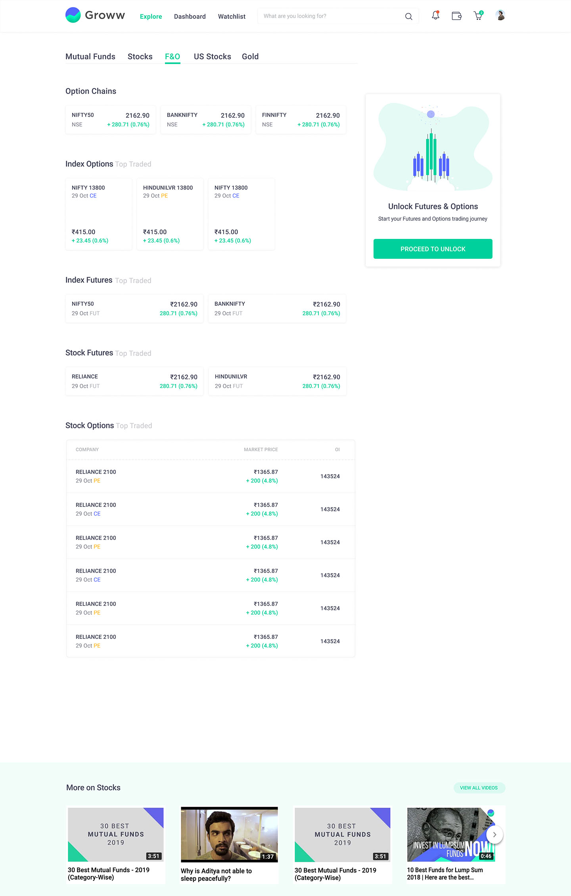
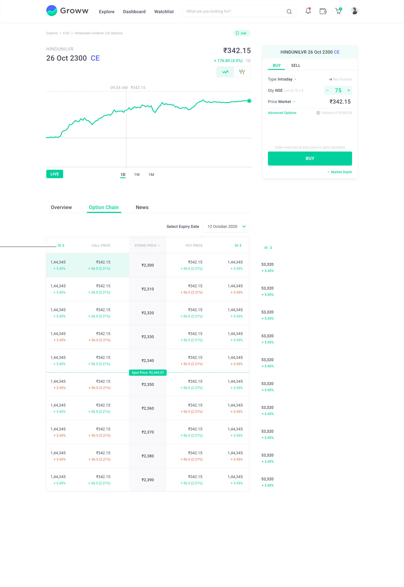
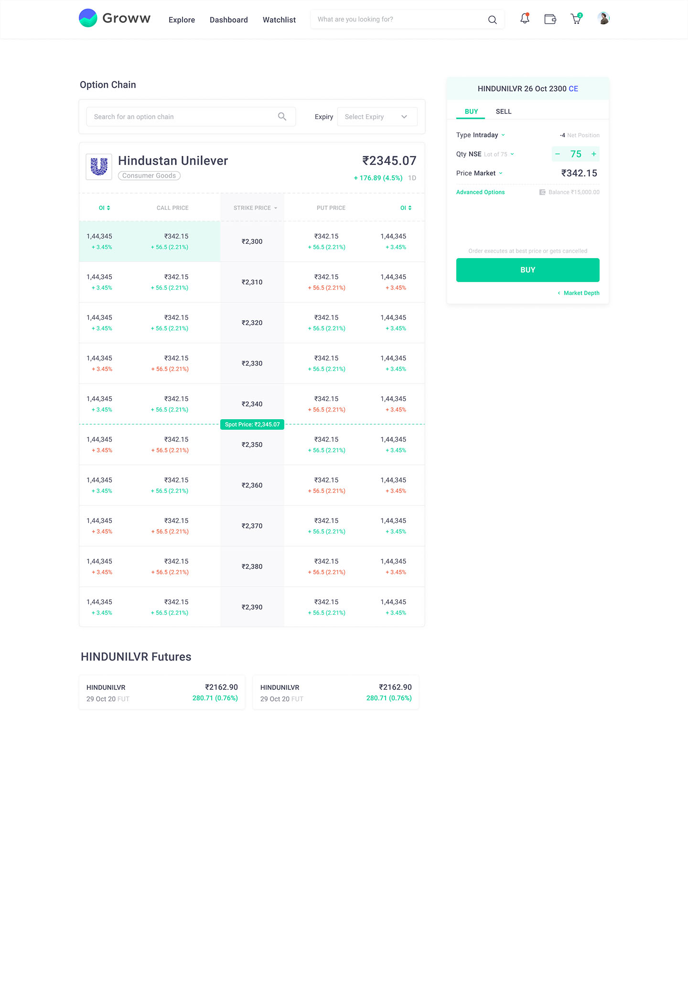

>>>>>>> Stashed changes

Student Name: Bharat Bhusan Apat
Guide: Ms. Mamata N Rao, Co-Guide: Dr. Bibhudutta Baral
Sponsor: Mfine, Novocura Tech Health Services - Bangalore
Digital Vaccination Tracker for Children Aged 0 through 18 Years
Student Name: Bharat Bhusan Apat
Programme: M.Des.
Guide: Ms. Mamata N Rao, Co-Guide: Dr. Bibhudutta Baral
Sponsor: Mfine, Novocura Tech Health Services - Bangalore
Project Synopsis:
Microsoft Family Safety empowers Families to create healthy habits and protect them with digital and physical safety features. The product today provides capabilities that empower families to control screen time restrictions, filter contents, control spending, impose restrictions on gaming and track physical location, etc. These capabilities are available across various devices like Xbox, Windows PC, and Android & iOS. However, today, it’s a complicated process for both parents and kids to perform all necessary actions on the product to fully utilize the benefits provided by the product. Even though both parents and kids understand the benefits of using such a product, there is a lack of motivation and delight that drives the users to perform necessary actions. Relook at the existing Family safety application with the aim to make it inclusive, engaging, and fun for all family members, including kids. Thereby, gamifying the overall experience and empowering them to engage with the system. The aim was to conduct an inquiry about the various ways a user can be motivated to engage with the product using methods of gamification. Identifying as many potential user jobs in the Family Safety product that can be driven for increased engagement using gamification. Coming up with Design solutions that augment existing features of Family Safety with aspects of gamification to drive user engagement and encourage desired behaviour. The outcome was a gamified solution, composed of game mechanics and rewards measured against the Octalysis framework. The final concept was an amalgamation of Intrinsic and extrinsic rewards, containing an underlying story to encourage kids to empathize with the character, thereby staying motivated to achieve their goals set by the parents. The elements of User Experience by Jesse James Garrett and the 5 principles of Visual Design were applied to make the overall experience usable, useful, and delightful.
Microsoft Family Safety empowers Families to create healthy habits and protect them with digital and physical safety features. The product today provides capabilities that empower families to control screen time restrictions, filter contents, control spending, impose restrictions on gaming and track physical location, etc. These capabilities are available across various devices like Xbox, Windows PC, and Android & iOS. However, today, it’s a complicated process for both parents and kids to perform all necessary actions on the product to fully utilize the benefits provided by the product. Even though both parents and kids understand the benefits of using such a product, there is a lack of motivation and delight that drives the users to perform necessary actions. Relook at the existing Family safety application with the aim to make it inclusive, engaging, and fun for all family members, including kids. Thereby, gamifying the overall experience and empowering them to engage with the system. The aim was to conduct an inquiry about the various ways a user can be motivated to engage with the product using methods of gamification. Identifying as many potential user jobs in the Family Safety product that can be driven for increased engagement using gamification. Coming up with Design solutions that augment existing features of Family Safety with aspects of gamification to drive user engagement and encourage desired behaviour. The outcome was a gamified solution, composed of game mechanics and rewards measured against the Octalysis framework. The final concept was an amalgamation of Intrinsic and extrinsic rewards, containing an underlying story to encourage kids to empathize with the character, thereby staying motivated to achieve their goals set by the parents. The elements of User Experience by Jesse James Garrett and the 5 principles of Visual Design were applied to make the overall experience usable, useful, and delightful.
Keywords: child immunization, digital health records,
healthcare, vaccination reminder, vaccination tracker


